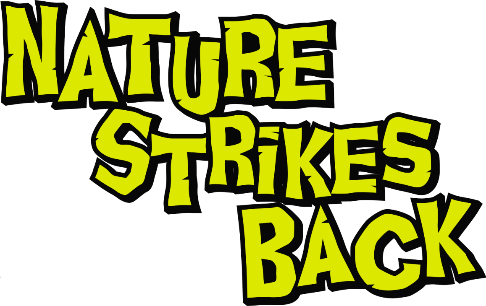

Originaly developed during a Game Jam, Nature Strikes Back was later expanded into a full game to be presented at Lisboa Games Week 2025, featuring a mix of lighthearted humor and a classic B-movie aesthetic.
Game Page

Originaly developed during a Game Jam, Nature Strikes Back was later expanded into a full game to be presented at Lisboa Games Week 2025, featuring a mix of lighthearted humor and a classic B-movie aesthetic.
Game Page


Rebuilt the game from scratch into Unity (previously made in Godot) and implemented core systems such as the player controller, enemy AI, and combat. The game focuses on a fun gunplay experience, with a variety of weapons and enemies to keep the player engaged.
Created the visual assets for the game, including character designs, environment art, and UI elements. The art style is inspired by classic B-movie aesthetics, with exaggerated proportions and colors.